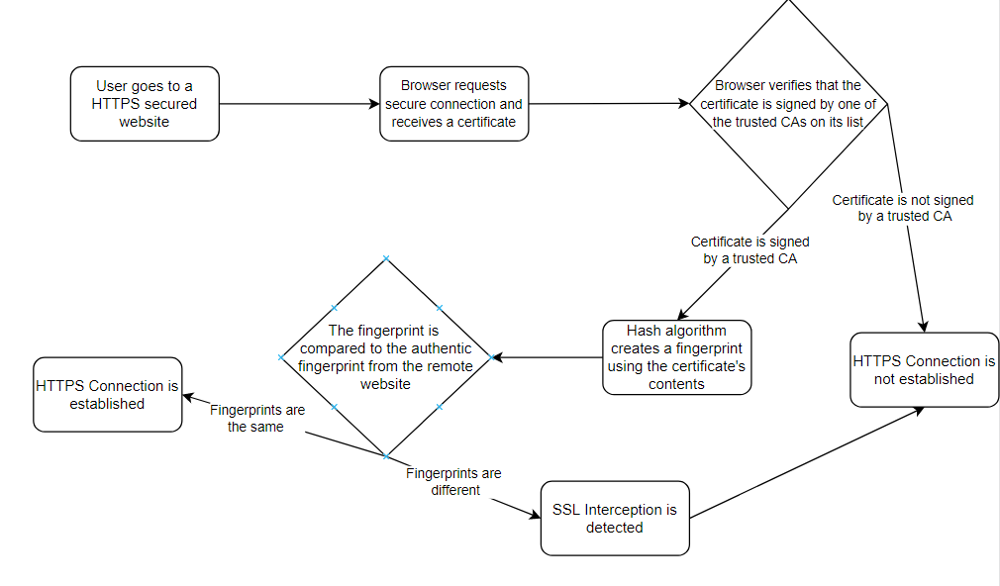

Akshay Vemulapalli
Allen ISD Steam Center
Advanced Computer Science III
Mr. Ben-Yaakov
August 25, 2022
HTTPS stands for Hypertext Transfer Protocol Secure. Data sent over HTTPS connections is encrypted, so important information, like passwords and credit card numbers, cannot be monitored or seen by Internet users looking at the data passed through the wires. In addition to encryption, an HTTPS Connection, also known as an SSL or TLS connection, also provides authentication, using CAs, or Certificate Authorities. Websites have to prove their identity in the real world in order to get digitally signed by a CA. Web browsers contain a long list of CAs that it trusts, and can verify the authenticity of a website if it is signed by one of the CAs on the list (GRC, 2020).
However, device have been designed to get around the security provided by these HTTPS connections, and these are called HTTPS Proxy Appliances. Companies, Schools, and Internet Providers can add its own Pseudo Certificate Authority to the trusted list of CAs in users' browsers or computers. The Proxy then creates a spoofed web server certificate that impersonates the actual remote site the user is trying to use, and signs the certificate using the Pseudo CA that was already added to the browser, giving it access to the data sent through the "secure" HTTPS connection. This web server decrypts and logs all of the data sent from the browser, stripping away all privacy and security from the user. It then re-encrypts the data and, impersonating the user, sends it to the actual remote site (GRC, 2020). This is also known as a Man In The Middle attack, which is when someone puts themselves in between a user and an application in order to take personal information. An MITM attack is like a mailman looking inside an envelope with your bank statement before sending it to its destination (Imperva, 2019).
These SSL Interceptions cannot be prevented, but, fortunately they can be detected because it is not possible to completely imitate the security certificate from the actual remote website. The HTML Proxy's certificate has to have a different public key from the actual remote website because the proxy does not have access to the website's private key, which is needed to use the same public key as the actual website. The differences public key is easily detected using a hashing algorithm. A hashing algorithm is a complex mathematical algorithm that process data. The hash from a good hashing algorithm will completely change when even a very small part of the data its processing is changed. A strong hashing algorithm is also not as vulnerable to special cases in which it is weaker. Because of hashing, a small difference in the certificates' public keys can be strongly detected because they will have completely different hashes (GRC, 2020).
However, massive companies often use many different security certificates because that have so many different servers and websites distributed across the globe. This might lead someone to think that their data is being intercepted, when actually they are just connecting using a different, but still secure, certificate. When it is falsely concluded that the data is being intercepted, this is called a false-positive. On the other hand, a false negative means concluding that the data is not being intercepted when it actually is being intercepted. A false negative is very dangerous, because it means your data is being intercepted when you think you know that is not being intercepted (GRC, 2020).
Schools, governments, and Internet Service Providers should not have the right to eavesdrop on user communications because corrupt individuals would be able to use the data unethically. In an ideal world, officials would only use this information to help or protect people, but there usually tends to be some degree of corruption among these people, because many people have their own interests at heart, and this might mean harming others to benefit themselves.

What is MITM (man in the middle) attack: Imperva. Learning Center. (2019, December 29). Retrieved August 26, 2022, from https://www.imperva.com/learn/application-security/man-in-the-middle-attack-mitm/
Steve Gibson, G. I. B. S. O. N. R. E. S. E. A. R. C. H. C. O. R. P. O. R. A. T. I. O. N. (2020). GRC : SSL TLS HTTPS web server certificate fingerprints . GRC | SSL TLS HTTPS Web Server Certificate Fingerprints . Retrieved August 26, 2022, from https://www.grc.com/fingerprints.htm